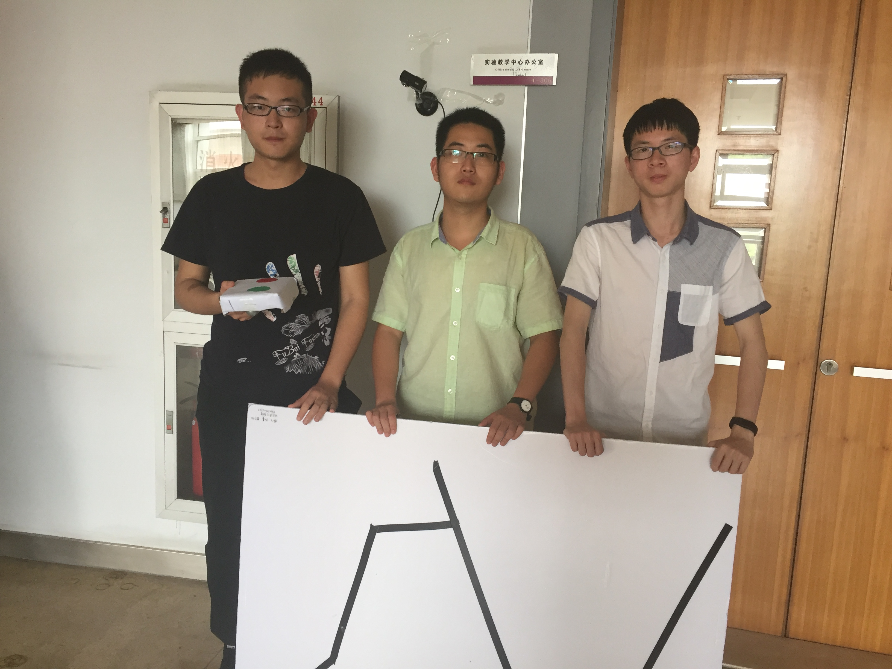
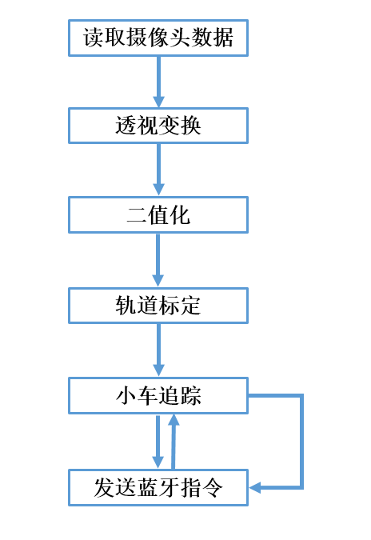

-
工科创 IIB 05 组
冯一飞 徐睿 瞿哲
本项目使用 OpenCV+Codeblocks 进行上位机的图像部分处理，使用 MSP430 单片机控制小车，使用 energine 进行单片机代码的编写调试，用sscom作为蓝牙串口调试工具。实现了通过计算机进行轨道识别和小车识别，自动追踪小车位置并发送蓝牙指令，完成小车走黑线的任务。
【左】 徐睿，【中】 冯一飞 【右】 瞿哲

负责部分：
单片机代码调试与改进，蓝牙模块代码编写，地图制作，报告撰写
个人感想：
工科创IIB是我选修的第一门工科创课程。这门课虽然被老师定义为入门课程，但我还是觉得这门课对于软件和硬件都有较高的要求。我负责的硬件部分主要是两方面。一方面是完成了对小车前进、后退、左右转向、停车功能的初步建立，并和一飞共同完成了对各项功能的改进和完善；另一方面我主要编写了蓝牙模块上位机和下位机通信部分的代码并和一飞共同完成了调试。在此之前我并没有使用过energia，也没有用过蓝牙模块，但是在询问有项目经验的同学以及资料查阅之后终于搞懂，搞懂之后进展很快。不过我们共同调试了很久，调试期间多次修改单片机控制部分的参数，最后终于达到了理想的效果。
负责部分：
地图小车制作，单片机蓝牙代码调试，报告撰写
个人感想：
蓝牙小车走黑线是我做过的第一个小科创项目。这个项目对于软件和硬件、理论和实践、分工和合作都有要求，所以完成起来磕磕绊绊、殊为不易。我负责的硬件部分主要是两方面。一方面是对小车的外型进行改造，减少无关变量的误差，强化摄像头对于红绿两个圆形标志的识别精度。另一方面我主要与徐睿完成了对小车前进、后退、左右转向、停车功能的建立和完善，通过调整小车两个轮子的转速、延时、角度等使下位机与上位机协调工作。这次项目对于我来说硬件除了语言是c以外其他的都是陌生的，一开始毫无头绪，但在多方询问有项目经验的同学之后，进展很快，这里也多亏两位队友的帮助，后期的项目进展很快，最后项目完成的情况也十分理想。
负责部分：
OpenCV程序编写，网页制作，报告撰写
个人感想：
工科创IIB是我选修的第一门工科创课程，这是我第一次接触OpenCV, 所以一开始上手还是有些困难的。在编写程序时，网上丰富的OpenCV教程对我帮助很大，但是由于不同版本OpenCV的API差异较大，在写程序时还是要注意尽量使用新版本的API。图像识别的程序结构比较简单，但很多参数要后期调试才能确定，因此应该尽早开始调试。另外，图像识别程序还要与发送蓝牙指令的程序配合，因此我们在头文件中统一定义了函数接口，这大大提高了组员之间互相配合编写程序的效率。最后要感谢两位队友的帮助，没有大家互相配合这个项目很难做好。
程序处理流程如下：
